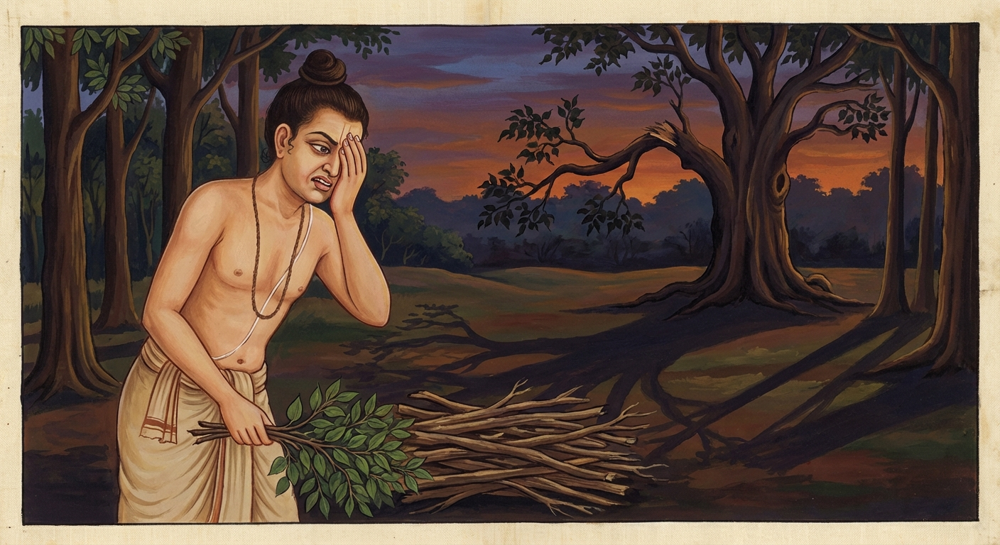

1. වරුණ ජාතකය (71)
“යො පුබ්බෙ කරණීයානී” (යමෙක් පළමු කොට කළ යුත්ත) යන මේ දේශනාව බුදුරජාණන් වහන්සේ ජේතවනාරාමයෙහි වැඩ වසන සමයෙහි කුටුම්බික පුත්ර තිස්ස තෙරුන් අරබයා වදාළ සේක. එක් දිනක් සැවැත් නුවර වාසී එකිනෙකාට මිතුරු වූ කුල පුත්රයෝ තිස් දෙනෙක් පමණ සුවඳ මල් හා වස්ත්රාදිය රැගෙන, “ශාස්තෘන් වහන්සේගේ ධර්ම දේශනාව අසන්නෙමු” යි මහා ජනයා පිරිවරා ජේතවනයට ගියහ. ඔවුහු නා මළුව, සල් මළුව ආදී තැන්වල මඳ වේලාවක් රැඳී සිටියහ. සවස් කාලයෙහි බුදුරජාණන් වහන්සේ සුවඳින් සුවඳවත් වූ ගන්ධ කුටියෙන් නික්ම දම් සභාවට වැඩමවා අලංකාර කළ බුද්ධාසනයෙහි වැඩ හුන් සේක. එකල්හි පිරිවර සහිත වූ ඒ පිරිස දම් සභාවට ගොස් බුදුරජාණන් වහන්සේව සුවඳ මලින් පුදා, චක්ර ලක්ෂණයෙන් විසිතුරු වූ පිපුණු නෙළුම් මලක් බඳු ශ්රී පාදයන් වැඳ එකත්පසෙක හිඳ දහම් ඇසූහ.
ඉක්බිති ඔවුන්ට මෙබඳු සිතක් ඇති විය: “අපි භාග්යවතුන් වහන්සේ දෙසූ දහම යම් සේ අවබෝධ කර ගතිමු ද, ඒ අනුව ගිහි ගෙයි වසමින් දහම් පුරන්නට නොහැක, එබැවින් අපි පැවිදි වෙමු”. ඔවුහු තථාගතයන් වහන්සේ දම් සභාවෙන් නික්ම වැඩි කල්හි උන්වහන්සේ වෙත එළැඹ වැඳ පැවිද්ද ඉල්ලූහ. ශාස්තෘන් වහන්සේ ඔවුන්ට පැවිද්ද දුන් සේක. ඔවුහු ආචාර්ය උපාධ්යායන්ගේ සිත් ගෙන උපසම්පදාව ලැබූහ. පසුව:
- පස් වසක් ආචාර්ය උපාධ්යායන් සමීපයෙහි විසූහ.
- මාතෘකා දෙක (උභය ප්රාතිමෝක්ෂය) ප්රගුණ කළහ.
- කැප අකැප දේ දැන ගත්හ.
- ත්රිවිධ අනුමෝදනා බණ ඉගෙන ගත්හ.
- සිවුරු මසා පඬු පොවා ගත්හ.
“දැන් මහණ දම් පුරන්නෙමු” යි ආචාර්ය උපාධ්යායයන්ගෙන් අවසර ගෙන ශාස්තෘන් වහන්සේ වෙත එළැඹ වැඳ එකත්පසෙක හිඳ, “ස්වාමීනි, අපි භවයෙහි කළකිරුණෝ වෙමු. ජාති, ජරා, ව්යාධි, මරණ බියෙන් බියපත් වූවෝ වෙමු. අපට සසරින් මිදීම සඳහා කමටහනක් කියා දෙනු මැනවැ” යි ඉල්ලූහ. බුදුරජාණන් වහන්සේ ඔවුන්ට අටතිස් කර්ම ස්ථාන අතුරෙන් සුදුසු කර්ම ස්ථානයක් තෝරා වදාළ සේක. ඒ භික්ෂූහු ශාස්තෘන් වහන්සේ වෙතින් කමටහන් ගෙන උන්වහන්සේව වැඳ පැදකුණු කොට පිරිවෙනට ගොස් ආචාර්ය උපාධ්යායයන් දෙස බලා පාසිවුරු ගෙන “මහණ දම් පුරන්නෙමු” යි නික්මුණහ.
එකල්හි ඔවුන් අතර සිටි කුටුම්බික පුත්ර තිස්ස තෙර නම් වූ එක් භික්ෂුවක් කුසීත ය; වීර්යයෙන් තොර ය; රසයෙහි ගිජු වූයේ ය. ඔහු මෙසේ සිතී ය: “මට වනයෙහි විසීමට හෝ වීර්යය වැඩීමට හෝ පිඬු සිඟීමෙන් යැපීමට හෝ නොහැක. මේ ගමනින් මට කවර ප්රයෝජනයක් ද? මම ආපසු නවතිමි.” හෙතෙම වීර්යය අත්හැර ඒ භික්ෂූන් සමඟ මඳ දුරක් ගොස් නැවතුණේ ය. ඒ භික්ෂූහු ද කොසොල් ජනපදයෙහි චාරිකාවෙහි හැසිරෙමින් එක්තරා පසල් ගමකට ගොස්, එගම ඇසුරු කොට වන සෙනසුනක වස් එළැඹියහ. වස් කාලය වූ තෙමස ඇතුළත අප්රමාදීව උත්සාහයෙන් වීර්යය කළ ඔවුහු විදර්ශනාව ගැබ්ගන්වා පොළොව නාද කරවමින් රහත් බවට පත් වූහ. වස් පවාරණය කොට, “ලැබූ ගුණ විශේෂය ශාස්තෘන් වහන්සේට සැල කරන්නෙමු” යි එතැනින් නික්ම පිළිවෙළින් ජේතවනයට පැමිණ පාසිවුරු තැන්පත් කොට ආචාර්ය උපාධ්යායන් දැක, තථාගතයන් වහන්සේ දකිනු කැමැති ව උන්වහන්සේ වෙත ගොස් වැඳ හිඳ ගත්හ. බුදුරජාණන් වහන්සේ ඔවුන් සමග මිහිරි පිළිසඳර කළ සේක. කළ පිළිසඳර ඇත්තා වූ ඔවුහු, තමන් ලැබූ ගුණය තථාගතයන් වහන්සේට සැල කළහ. ශාස්තෘන් වහන්සේ ඒ භික්ෂූන්ට ප්රශංසා කළ සේක. කුටුම්බික පුත්ර තිස්ස තෙරුන් වහන්සේ, බුදුරජාණන් වහන්සේ ඔවුන්ගේ ගුණ වර්ණනා කරනු දැක, තමන් ද මහණ දම් පුරනු කැමැති වූහ. ඒ රහත් භික්ෂූහු ද, “ස්වාමීනි, අපි නැවතත් එම ආරණ්ය සේනාසනයට ම ගොස් වසන්නෙමු” යි ශාස්තෘන් වහන්සේගෙන් අවසර ඉල්ලූහ. බුදුරජාණන් වහන්සේ “මැනවැ” යි අවසර දුන් සේක. උන්වහන්සේලා ශාස්තෘන් වහන්සේ වැඳ පිරිවෙනට ගියහ.
එකල්හි ඒ කුටුම්බික පුත්ර තිස්ස තෙරණුවෝ රාත්රී කාලය එළැඹි විගස ඇරඹූ දැඩි වීර්යය ඇත්තෙක් වී, ඉතා වේගයෙන් මහණ දම් පුරන්නට වූහ. මධ්යම රාත්රිය වන විට එළැඹෙන පුවරුවට (ආලම්බන ඵලකයට) හේත්තු වී සිටගෙන ම නින්දට වැටුණේ, පෙරළී වැටී උකුල් ඇටය බිඳ ගත්තේ ය. දැඩි වේදනාවක් හට ගැනිණි. උන්වහන්සේට උපස්ථාන කිරීමට සිදු වූ නිසා අර භික්ෂූන්ගේ ගමන ද වැළකිණි. ඉක්බිති උපස්ථාන වේලාවෙහි පැමිණි ඒ භික්ෂූන්ගෙන් ශාස්තෘන් වහන්සේ, “මහණෙනි, තොපි හෙට යමු යි ඊයේ මාගෙන් අවසර ගත්තා නො වේ දැ?” යි විචාළ සේක. “එසේය ස්වාමීනි, එසේ වුවත් අපගේ මේ යහළු කුටුම්බික පුත්ර තිස්ස තෙරණුවෝ නුසුදුසු වේලාවෙහි අධික වේගයෙන් මහණ දම් පුරන්නට ගොස්, නින්දෙන් මැඩී පෙරළී වැටුණේ උකුල් ඇටය බිඳ ගත්හ. ඔහු නිසා අපගේ ගමනට බාධා විය” යි පැවසූහ. එවිට ශාස්තෘන් වහන්සේ, “මහණෙනි, මොහු තමාගේ හීන වීර්යය ඇති බව නිසා නුසුදුසු වෙලාවෙහි පමණ ඉක්මවා වීර්යය කරමින්, තොපගේ ගමනට බාධා කළේ දැන් පමණක් නො වේ; පෙර ද මොහු තොපගේ ගමනට අනතුරු කළේ ය” යි වදාරා ඔවුන් විසින් අයදනා ලදුව අතීත කථාව ගෙනහැර දැක්වූ සේක.
අතීතයෙහි ගාන්ධාර රටේ තක්සලා නුවර බෝධිසත්ත්වයෝ දිසාපාමොක් ආචාර්යවරයාව පන්සියයක් මානවකයන්ට ශිල්ප ඉගැන්වූහ. ඉක්බිති එක් දිනක් ඒ මානවකයෝ දර ගෙන ඒම සඳහා වනයට ගොස් දර එකතු කළහ. ඔවුන් අතර සිටි එක් කම්මැලි මානවකයෙක් විශාල ලුනුවරණ ගසක් දැක “මේ වියළි ගසක්” යැයි සිතා, “මොහොතක් නිදාගෙන පසුව ගසට නැඟ දර කඩාගෙන යන්නෙමි” යි උතුරු සළුව බිම අතුරා වැතිර දත් මිටි කමින් නින්දට වැටුණේ ය. අනෙක් මානවකයෝ දර මිටි බැඳගෙන යන්නාහු, ඔහුගේ පිටට පයින් පහර දී අවදි කොට ගියහ. කම්මැලි මානවකයා නැඟිට ඇස් පිස දමමින් පහ නො වූ නිදිමත ඇතිව ම ඒ ගසට නැඟ, අත්තක් අල්ලා තමා දෙසට ඇද කඩද්දී, එය කැඩී අවුත් ඉල්පී ගිය කෙළවර වැදී තමාගේ ඇසක් බිඳී ගියේ ය. හෙතෙම එක් අතකින් ඒ ඇස වසාගෙන අනිත් අතින් තෙත් දර කඩාගෙන ගසින් බැස, දර මිටිය බැඳ ඔසවාගෙන වේගයෙන් ගොස් අන් අය ගෙනැවිත් තිබූ දර ගොඩ මත්තෙහි හෙළී ය.

එදින ම පිටිසර ගමක එක් කුලයකින් “හෙට බ්රාහ්මණ පූජාවක් කරන්නෙමු” යි ආචාර්යවරයාට ආරාධනා කළහ. ආචාර්යවරයා මානවකයන් අමතා, “දරුවනි, හෙට එක් ගමකට යා යුතු ය. තොපට නිරාහාර ව යා නොහැක. එබැවින් උදෙන්ම කැඳ පිසවාගෙන, එහි ගොස් තම තමන්ට ලැබුණු කොටස් ද අපගේ කොටස ද රැගෙන එව්” යි කීවේ ය. ඔවුහු අලුයම කැඳ පිසීම සඳහා දාසිය නැගිටුවා “වහා අපට කැඳ පිසව” යි කීහ. ඇය දර ගන්නී, දර ගොඩ මත්තෙහි තිබූ අමු ලුනුවරණ දර ගෙන ලිප තබා නැවත නැවත කටින් පිඹින්නී, හිරු උදාවන තුරු ම ගිනි දල්වා ගැනීමට නොහැකි වූවා ය. මානවකයෝ “දැන් ඉතා දවල් විය, දැන් යන්නට නොහැකි ය” යි ආචාර්යවරයා වෙත ගියහ. ආචාර්යවරයා, “කිම දරුවනි, නො ගියහු ද?” යි ඇසී ය. “එසේය ආචාර්යතුමනි, නො ගියෙමු.” “ඒ මක්නිසා ද?” “අසවල් කම්මැලි මානවකයා අප සමග දරට ගොස් ලුනුවරණ ගස මුල නිදාගෙන, පසුව වේගයෙන් ගසට නැඟ ඇස ද බිඳගෙන අමු ලුනුවරණ දර ගෙනැවිත් අප ගෙන ආ දර මත්තෙහි දැමුවේ ය. කැඳ පිසින දාසිය වියළි දර යැයි සිතා ඒවා ගෙන ලිප මෙලවූ නමුත් හිරු උදාවන තුරු ම ගිනි දල්වා ගත නොහැකි විය. මේ කරුණෙන් අපගේ ගමනට බාධා විය.” ආචාර්යවරයා මානවකයා විසින් කරන ලද ක්රියාව අසා, “නුවණ නැත්තන්ගේ ක්රියා නිසා මෙවැනි පිරිහීම් සිදු වේ” යැයි පවසා මේ ගාථාව වදාළේ ය:
“යමෙක් පළමුව කළ යුතු දේ පසුව කරන්නට කැමති වේ ද, (අමු) ලුනුවරණ දර කැඩූ (මානවකයා) මෙන් හෙතෙම පසුව තැවීමට පත් වෙයි.”
එහි අර්ථය මෙසේ ය: ස පච්ඡා මනුතප්පතී යනු, යම්කිසි පුද්ගලයකු “මෙය පළමුව කළ යුතු ය, මෙය පසුව කළ යුතු ය” යි නො විමසා, පුබ්බෙ කරණීයානි හෙවත් පළමුව කළ යුතු දේ පච්ඡා හෙවත් පසුව කරයි ද; වරණකට්ඨභඤ්ජො හෙවත් මේ අමු ලුනුවරණ දර කැඩූ අපගේ බාල මානවකයා මෙන් සො (ඒ පුද්ගලයා) පච්ඡා අනුතප්පති හෙවත් පසුව තැවෙයි, ශෝක කරයි, හඬයි යනුයි.
මෙසේ ඒ බෝධිසත්ත්වයෝ අතවැසියන්ට මේ කාරණය කියා දී, දානාදී පුණ්ය කර්මයන් කොට ජීවිත කාලය අවසානයෙහි කම් වූ පරිදි මිය ගියහ.
බුදුරජාණන් වහන්සේ, “මහණෙනි, මොහු ඔබට බාධා කරන්නේ දැන් පමණක් නොව පෙරත් කළේ ම ය” යි වදාරා මේ ධර්ම දේශනාව ගෙනහැර දක්වා පූර්වාපර සන්ධි ගළපා ජාතකය නිමා කළ සේක. “එකල ඇස බිඳ ගත් මානවකයා නම් දැන් මේ උකුල් ඇටය බිඳ ගත් භික්ෂුව ය. සෙසු මානවකයෝ දැන් මේ බුදු පිරිස ය. ආචාර්ය බ්රාහ්මණයා නම් මම ම වෙමි.”
පළමු වැනි වරුණ ජාතක වර්ණනාව නිමි.